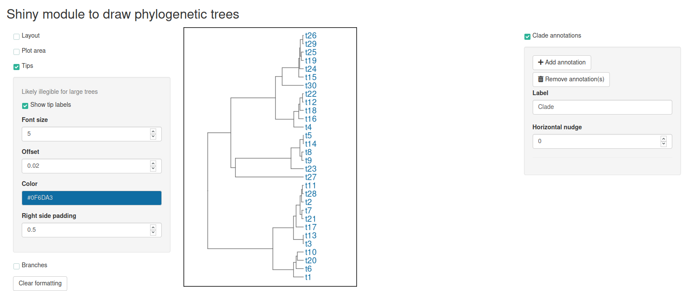
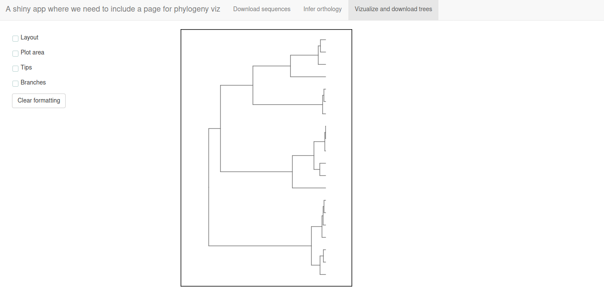

This R package is a collection of {shiny} modules for interactive annotation of phylogeny plots. There are two main ways to use the modules, in an interactive R session or by ‘embedding’ in an existing {shiny} app.
phynotate in interactive R sessionsIn many cases we either obtain a phylogeny (or other tree-like structure that can be converted to an object of class phylo) by running some analysis in R, or we load a phylogeny created by another program into R for further analyses or visualization. Although there is certainly no reason why we couldn’t write ape, phytools, or ggtree code to create and save a custom plot of our tree, often, we just want to take a quick look, make some minor edits by clicking with a mouse and close the tree. This last part is a bit more difficult for a novice user of phylogeny plotting packages that is acustomed to an interface like FigTree or Dendroscope. phynotate attempts to fill this niche. To save a some time on making a decent figure through a GUI without writing the phylo object to file and leaving the R session.
An example workflow. We run some exciting analysis that results with 100 trees and we need to glimpse tree 54:
library(ape) Trees <- replicate(n = 100, expr = rcoal(30), simplify = FALSE) Trees[[54]] # Phylogenetic tree with 30 tips and 29 internal nodes. # # Tip labels: # t9, t8, t14, t5, t23, t27, ... # # Rooted; includes branch lengths.
Opening a {shiny} app within our browser with tree 54 is then as easy as:
library(phynotate) make_phynotate(phylogeny = Trees[[54]], draw_modules = "LPTB", annotation_module = TRUE)

phynotate modules in larger {shiny} appsphynotate is entirely made up of {shiny} modules and their helpers (mostly not exported) or wrappers (like make_phynotate()). If you have an existing shiny app, where you would like to display a phylogeny and allow some modifications to it, perhaps even downloads, then calling the phynotate modules might be a good option.
For example (modified from the help of phynotate::main_server()):
library(shiny) library(phynotate) ui <- shiny::navbarPage( title = "A shiny app where we need to include a page for phylogeny viz", tabPanel(title = "Download sequences"), tabPanel(title = "Infer orthology"), tabPanel( title = "Vizualize and download trees", phynotate::main_ui( id = "id", draw_modules = "LPTB", anno_module = FALSE ) ) ) server <- function(input, output, session) { # Server code to download sequences # Server code to infer orthology # Send a user selected tree to the phynotate viz module main_server(id = "id", phylogeny = input[["user_selected_tree"]], draw_modules = "LPTB") } shinyApp(ui = ui, server = server)

Install phynotate from GitHub using:
library(devtools) install_github("teofiln/phynotate")
This is a work in progress and there are many features yet to be implemented: